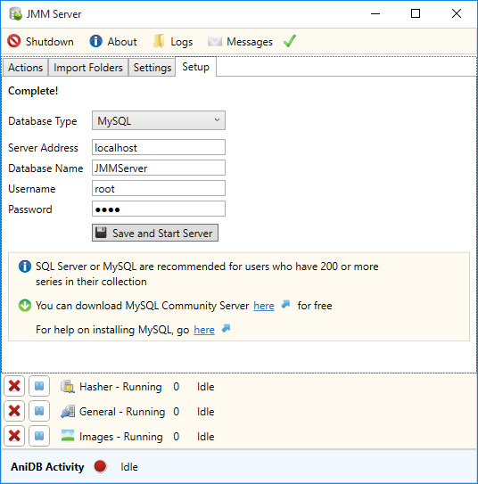

JMM Server - Setup Tab
The setup tab allows you to change your database settings. Once you've initially setup your database you wont need to change any of the settings in the setup tab.

Database Type: The type of database JMM Server will use, thee are three options. SQL Server, MySQL and SQLite.
Server Address: The address of your database. By default it's localhost.
Database Name: The name of your database. By default it's JMMserver.
Username: The name of the user connected to the database. By default it's root.
Password: The password you setup for the user to connect to the database.